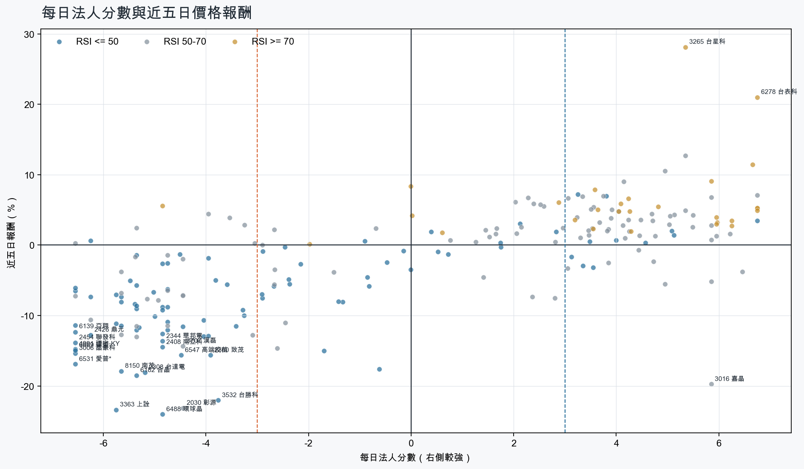
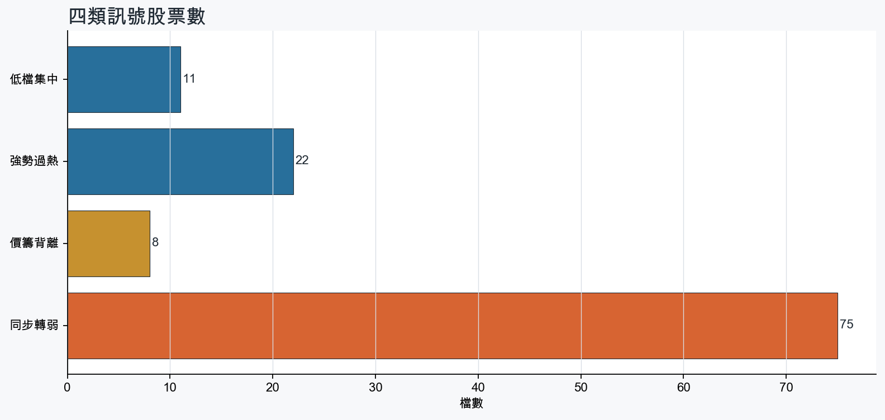
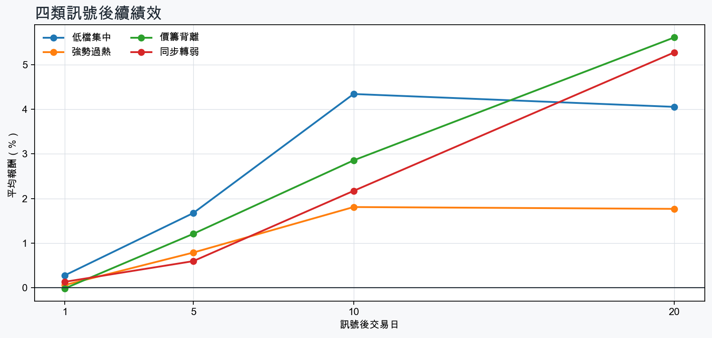

市場情緒偏空
近5日法人合計-9,610,233 張
篩選池上漲比例47.7%
籌碼好 / RSI低11 檔
籌碼差 / 價跌15 檔



EPS × PE VALUATION
法人常用的相對估值
顯示保守、基準與樂觀估值帶，不把單一數字包裝成精準目標價。
最新累計 EPS 依季數年化 × 同產業有效 P/E 的 Q25／中位數／Q75。排除本公司、非正 P/E，並以 1.5×IQR 排除離群值。估值帶是公開資料篩選值，不是法人目標價；未使用分析師預估 EPS。
MOOD × MONEY
情緒與籌碼雷達
熱度代表被討論程度；情緒分與法人方向分開計算。熱門不等於適合追價，樣本不足也不硬判多空。
| 股票 | 情緒 | 討論熱度 | 情緒 × 籌碼 | 情緒 × 基本面 |
|---|---|---|---|---|
| 2412 中華電強勢過熱 | 情緒高漲 +36.1信心 100 | 1002 篇 / 356 留言 / 3 則新聞 | 情籌共振法人分 +4.3 | 基本面與情緒共振基本面分 +3.6 |
| 1216 統一強勢過熱 | 情緒高漲 +100.0信心 100 | 852 篇 / 137 留言 / 3 則新聞 | 情籌共振法人分 +6.8 | 基本面與情緒共振基本面分 +1.8 |
| 2308 台達電同步轉弱 | 情緒高漲 +49.5信心 100 | 852 篇 / 135 留言 / 3 則新聞 | 熱門但法人撤退法人分 -5.2 | 基本面與情緒共振基本面分 +3.6 |
| 0056 元大高股息價籌背離 | 情緒高漲 +88.4信心 88 | 841 篇 / 131 留言 / 3 則新聞 | 熱門但法人撤退法人分 -6.5 | 基本面與情緒分歧基本面分 +0.0 |
| 2027 大成鋼強勢過熱 | 偏多 +18.7信心 56 | 771 篇 / 92 留言 / 0 則新聞 | 情籌混合法人分 +6.0 | 基本面與情緒分歧基本面分 +3.6 |
| 6669 緯穎同步轉弱 | 偏空 -35.0信心 68 | 691 篇 / 45 留言 / 3 則新聞 | 情籌雙弱法人分 -6.5 | 基本面佳、情緒悲觀基本面分 +3.0 |
| 3363 上詮同步轉弱 | 中性分歧 -4.3信心 65 | 651 篇 / 31 留言 / 3 則新聞 | 情籌混合法人分 -5.8 | 基本面與情緒分歧基本面分 -1.5 |
| 3265 台星科強勢過熱 | 情緒高漲 +70.1信心 70 | 641 篇 / 29 留言 / 3 則新聞 | 情籌共振法人分 +5.3 | 基本面與情緒共振基本面分 +3.6 |
| 6278 台表科強勢過熱 | 中性分歧 -5.8信心 63 | 601 篇 / 20 留言 / 3 則新聞 | 情籌混合法人分 +6.8 | 基本面與情緒分歧基本面分 +2.4 |
| 2360 致茂同步轉弱 | 中性分歧 +0.0信心 50 | 602 篇 / 23 留言 / 0 則新聞 | 情籌混合法人分 -3.9 | 基本面與情緒分歧基本面分 +3.6 |
| 2454 聯發科同步轉弱 | 情緒低迷 -57.3信心 57 | 561 篇 / 12 留言 / 3 則新聞 | 情籌雙弱法人分 -6.5 | 基本面佳、情緒悲觀基本面分 +2.4 |
| 6191 精成科價籌背離 | 中性分歧 +0.0信心 30 | 390 篇 / 0 留言 / 3 則新聞 | 情籌混合法人分 -3.2 | 基本面與情緒分歧基本面分 +3.0 |
01
籌碼好 / RSI低
優先研究基本面；法人續買且價格止穩時，才適合分批觀察。
| 股票 / 確認狀態 | 每日法人分 | 浦男式近似 | 法人加速度 | RSI / 相對強弱 | 量價確認 | 融資融券 | 每週集保確認 | 基本面 | EPS × 同業 P/E 估值 | 情緒 / 情籌 | 近期消息 | 論壇討論 |
|---|---|---|---|---|---|---|---|---|---|---|---|---|
| 3029 零壹可研究 · 99 分籌碼與價格確認，可列研究清單 | +6.8法人 +3,028 張 / 5 天 | 接近 · 85站上月線；中期均線偏多；法人籌碼偏多；留意量能異常 | +821 張近3日 +1,814 / 連續 +5 日 | 46.8相對大盤 +0.2% | 量比 0.61確認分 +3.2成交量不足 | -%融資 - 張 / 融券 - 張 | -0.13 pp1000張 -0.59 pp | 單月營收年增 +38.6%；累計營收年增 +22.0%；2026 Q2 累計 EPS 3.632026 Q2 累計營益率 6.3%來源：公開資訊觀測站 | 基準 NT$ 100.6估值帶 84.29–133.3現價 119.5 · 估值帶內 · 距基準 -15.8%2026 Q2 累計 EPS 3.63 → 年化 7.26資訊服務同業 P/E 11.61／13.86／18.36 · n=34 · 信心中等以 Q2 累計 EPS 年化，不等同分析師全年預估來源：TWSE／TPEx 每日本益比 | 樣本不足 +0.0熱度 23 / 信心 10情緒樣本不足 | 【13:06 即時新聞】零壹(3029)走強，資安與雲端題材持續成盤中焦點CMoney投資網誌 · 10/12 | 近期沒有明確提及本股的論壇樣本 |
| 6290 良維可研究 · 93 分籌碼與價格確認，可列研究清單 | +3.5法人 +4,767 張 / 2 天 | 接近 · 85中期均線偏多；法人籌碼偏多；法人買盤加速；留意未站月線、買超延續不足 | +8,046 張近3日 +5,894 / 連續 +2 日 | 49.8相對大盤 +3.5% | 量比 1.75確認分 +3.4收盤跌破20日線 | +1.0%融資 +170 張 / 融券 +113 張 | +1.34 pp1000張 +1.83 pp | 單月營收年增 +15.7%；累計營收年增 +10.1%；2026 Q2 累計 EPS 4.50仍需觀察下一期財報延續性來源：公開資訊觀測站 | 基準 NT$ 248.8估值帶 161.7–412.1現價 275.5 · 估值帶內 · 距基準 -9.7%2026 Q2 累計 EPS 4.50 → 年化 9.00電子零組件同業 P/E 17.97／27.64／45.79 · n=148 · 信心中等以 Q2 累計 EPS 年化，不等同分析師全年預估來源：TWSE／TPEx 每日本益比 | 中性分歧 +0.0熱度 33 / 信心 20情籌混合 | 6290 良維 - 神奇數字一直要：我發發⋯😅💪🌋 - 股市爆料同學會CMoney · 10/15【09:54 即時新聞】良維(6290)亮燈漲停，AI與CSP題材買盤拉抬CMoney投資網誌 · 10/14 | 近期沒有明確提及本股的論壇樣本 |
| 2606 裕民可研究 · 89 分籌碼與價格確認，可列研究清單 | +5.1法人 +4,925 張 / 5 天 | 接近 · 89站上月線；中期均線偏多；法人籌碼偏多；留意相對強度普通 | +93 張近3日 +2,325 / 連續 +5 日 | 47.7相對大盤 -2.7% | 量比 1.23確認分 +2.0價格、量能與籌碼未見明顯弱項 | -%融資 - 張 / 融券 - 張 | -0.52 pp1000張 -0.13 pp | 單月營收年增 +25.7%；累計營收年增 +25.2%；2026 Q2 累計 EPS 3.51仍需觀察下一期財報延續性來源：公開資訊觀測站 | 基準 NT$ 81.29估值帶 65.08–103.9現價 76.00 · 估值帶內 · 距基準 +7.0%2026 Q2 累計 EPS 3.51 → 年化 7.02航運業同業 P/E 9.27／11.58／14.80 · n=27 · 信心中等以 Q2 累計 EPS 年化，不等同分析師全年預估來源：TWSE／TPEx 每日本益比 | 樣本不足 +0.0熱度 0 / 信心 0情緒樣本不足 | 近期沒有通過股票語境篩選的新聞 | 近期沒有明確提及本股的論壇樣本 |
| 1808 潤隆等待確認 · 79 分籌碼有訊號，但價格尚未確認 | +3.8法人 +4,147 張 / 5 天 | 接近 · 73站上月線；法人籌碼偏多；買超具延續性；留意中期均線未翻多、法人買盤未加速 | -946 張近3日 +2,101 / 連續 +6 日 | 47.8相對大盤 +1.8% | 量比 0.71確認分 +0.920日線低於60日線；法人買盤減速 | -%融資 - 張 / 融券 - 張 | -0.11 pp1000張 -0.35 pp | 單月營收年增 +63462.8%；累計營收年增 +14769.5%；2026 Q2 累計 EPS 2.52仍需觀察下一期財報延續性來源：公開資訊觀測站 | 基準 NT$ 49.04估值帶 33.77–65.02現價 34.60 · 估值帶內 · 距基準 +41.7%2026 Q2 累計 EPS 2.52 → 年化 5.04建材營造同業 P/E 6.70／9.73／12.90 · n=62 · 信心中等以 Q2 累計 EPS 年化，不等同分析師全年預估來源：TWSE／TPEx 每日本益比 | 偏多 +29.7熱度 39 / 信心 30情籌共振 | 【13:18 即時新聞】潤隆(1808)盤中續漲，主力與法人買盤成市場焦點CMoney投資網誌 · 10/13【12:12 即時新聞】潤隆(1808)股價走強，營建族群政策題材持續發酵CMoney投資網誌 · 10/12 | 近期沒有明確提及本股的論壇樣本 |
| 6016 康和證等待確認 · 70 分籌碼有訊號，但價格尚未確認 | +3.4法人 +3,863 張 / 4 天 | 接近 · 73中期均線偏多；法人籌碼偏多；買超具延續性；留意未站月線、法人買盤未加速 | -243 張近3日 +1,832 / 連續 -1 日 | 46.5相對大盤 +0.9% | 量比 0.84確認分 -0.4收盤跌破20日線；法人買盤減速 | -0.0%融資 -3 張 / 融券 +7 張 | +0.27 pp1000張 +0.46 pp | 單月營收年增 +49.2%；累計營收年增 +200.4%；2026 Q2 累計 EPS 4.63仍需觀察下一期財報延續性來源：公開資訊觀測站 | 基準 NT$ 121.7估值帶 77.23–149.4現價 23.30 · 低於估值帶 · 距基準 +422.2%2026 Q2 累計 EPS 4.63 → 年化 9.26金融保險同業 P/E 8.34／13.14／16.13 · n=39 · 信心中等以 Q2 累計 EPS 年化，不等同分析師全年預估來源：TWSE／TPEx 每日本益比 | 樣本不足 +0.0熱度 0 / 信心 0情緒樣本不足 | 近期沒有通過股票語境篩選的新聞 | 近期沒有明確提及本股的論壇樣本 |
| 2646 星宇航空可研究 · 76 分籌碼與價格確認，可列研究清單 | +3.5法人 +5,504 張 / 5 天 | 接近 · 71站上月線；法人籌碼偏多；法人買盤加速；留意中期均線未翻多、相對強度普通 | +3,408 張近3日 +4,112 / 連續 +5 日 | 44.4相對大盤 -1.9% | 量比 1.36確認分 +1.920日線低於60日線 | -%融資 - 張 / 融券 - 張 | -0.28 pp1000張 -0.21 pp | 單月營收年增 +68.9%；累計營收年增 +37.1%2026 Q2 累計 EPS -0.11；2026 Q2 累計營益率 1.8%來源：公開資訊觀測站 | 不適用年化 EPS 非正數，不適合使用本益比估值 | 偏多 +29.7熱度 39 / 信心 30情籌共振 | ITF線上旅展開跑 星宇航空全航線85折起、AsiaYo訂單抽「極光旅行」自由時報 · 10/152646 星宇航空- 跨年機票漲逾15%照樣搶！十大熱門航點出爐這兩城市成黑馬- 股市爆料同學會CMoney · 10/15 | 近期沒有明確提及本股的論壇樣本 |
| 3264 欣銓可研究 · 79 分籌碼與價格確認，可列研究清單 | +3.2法人 +5,112 張 / 2 天 | 命中 · 88站上月線；中期均線偏多；法人籌碼偏多；留意法人買盤未加速、買超延續不足 | -4,723 張近3日 +191 / 連續 -1 日 | 45.6相對大盤 +15.4% | 量比 1.18確認分 +3.1法人買盤減速 | -5.7%融資 -735 張 / 融券 +64 張 | -7.40 pp1000張 -8.08 pp | 單月營收年增 +46.9%；累計營收年增 +35.4%；2026 Q2 累計 EPS 4.39仍需觀察下一期財報延續性來源：公開資訊觀測站 | 基準 NT$ 232.8估值帶 149.9–403.0現價 268.0 · 估值帶內 · 距基準 -13.2%2026 Q2 累計 EPS 4.39 → 年化 8.78半導體同業 P/E 17.07／26.51／45.90 · n=147 · 信心中等以 Q2 累計 EPS 年化，不等同分析師全年預估來源：TWSE／TPEx 每日本益比 | 偏多 +29.7熱度 39 / 信心 30情籌共振 | 欣銓Q3獲利估創高Q4續向上- 新聞MoneyDJ · 10/14《上櫃盤後成交金額前30名（6-3）》欣銓科技(5956059)富聯網 · 10/15 | 近期沒有明確提及本股的論壇樣本 |
| 2605 新興等待確認 · 56 分籌碼有訊號，但價格尚未確認 | +3.1法人 +3,918 張 / 3 天 | 接近 · 58中期均線偏多；法人籌碼偏多；買超具延續性；留意未站月線、法人買盤未加速 | -2,731 張近3日 +155 / 連續 -2 日 | 42.3相對大盤 -2.8% | 量比 0.62確認分 -3.6收盤跌破20日線；成交量不足；法人買盤減速 | -%融資 - 張 / 融券 - 張 | +0.92 pp1000張 +1.00 pp | 單月營收年增 +60.1%；累計營收年增 +41.8%；2026 Q2 累計 EPS 3.67仍需觀察下一期財報延續性來源：公開資訊觀測站 | 基準 NT$ 83.75估值帶 68.48–106.3現價 36.00 · 低於估值帶 · 距基準 +132.6%2026 Q2 累計 EPS 3.67 → 年化 7.34航運業同業 P/E 9.33／11.41／14.48 · n=26 · 信心中等以 Q2 累計 EPS 年化，不等同分析師全年預估來源：TWSE／TPEx 每日本益比 | 偏多 +29.7熱度 39 / 信心 30情籌共振 | 2605 新興 - 據Arctic公司稱，近期來自中國和印度的數據總體上支持了歐... - 股市爆料同學會CMoney · 10/15台股氣盛漲贏新興亞股 單周上漲1.7%最優UDN · 10/13 | 近期沒有明確提及本股的論壇樣本 |
| 2201 裕隆等待確認 · 67 分籌碼有訊號，但價格尚未確認 | +4.0法人 +3,342 張 / 5 天 | 接近 · 66中期均線偏多；法人籌碼偏多；法人買盤加速；留意未站月線、明顯弱於大盤 | +1,620 張近3日 +2,918 / 連續 +7 日 | 47.3相對大盤 -6.7% | 量比 0.88確認分 -0.0收盤跌破20日線；近20日弱於大盤 | -%融資 - 張 / 融券 - 張 | -0.34 pp1000張 -0.80 pp | 單月營收年增 +2.4%；2026 Q2 累計 EPS 0.50；2026 Q2 累計營益率 9.7%累計營收年增 -2.8%來源：公開資訊觀測站 | 基準 NT$ 13.62估值帶 11.14–17.19現價 29.10 · 高於估值帶 · 距基準 -53.2%2026 Q2 累計 EPS 0.50 → 年化 1.00汽車工業同業 P/E 11.14／13.62／17.19 · n=26 · 信心中等以 Q2 累計 EPS 年化，不等同分析師全年預估來源：TWSE／TPEx 每日本益比 | 樣本不足 +0.0熱度 0 / 信心 0情緒樣本不足 | 近期沒有通過股票語境篩選的新聞 | 近期沒有明確提及本股的論壇樣本 |
| 4763 材料*-KY等待確認 · 53 分籌碼有訊號，但價格尚未確認 | +4.6法人 +4,498 張 / 5 天 | 未命中 · 47法人籌碼偏多；法人買盤加速；買超具延續性；留意未站月線、中期均線未翻多 | +723 張近3日 +2,540 / 連續 +5 日 | 42.9相對大盤 -8.2% | 量比 0.56確認分 -3.4收盤跌破20日線；20日線低於60日線；近20日弱於大盤；成交量不足 | -%融資 - 張 / 融券 - 張 | -1.24 pp1000張 -1.35 pp | 單月營收年增 +30.5%；2026 Q2 累計 EPS 1.85；2026 Q2 累計營益率 41.7%累計營收年增 -17.1%來源：公開資訊觀測站 | 基準 NT$ 74.00估值帶 56.68–108.2現價 46.50 · 低於估值帶 · 距基準 +59.1%2026 Q2 累計 EPS 1.85 → 年化 3.70化學工業同業 P/E 15.32／20.00／29.25 · n=33 · 信心中等以 Q2 累計 EPS 年化，不等同分析師全年預估來源：TWSE／TPEx 每日本益比 | 中性分歧 +0.0熱度 33 / 信心 20情籌混合 | 材料*-KY (4763) 籌碼與法人動態整理CMoney · 10/154763 材料*-KY - https://youtu.be/OmqbhEbtqiU?s... - 股市爆料同學會CMoney · 10/14 | 近期沒有明確提及本股的論壇樣本 |
| 2542 興富發等待確認 · 47 分籌碼有訊號，但價格尚未確認 | +5.1法人 +17,082 張 / 5 天 | 未命中 · 43法人籌碼偏多；買超具延續性；基本面有支撐；留意未站月線、中期均線未翻多 | -9,463 張近3日 +5,245 / 連續 +7 日 | 22.8相對大盤 -16.3% | 量比 0.76確認分 -5.8收盤跌破20日線；20日線低於60日線；近20日弱於大盤；法人買盤減速 | -%融資 - 張 / 融券 - 張 | -1.62 pp1000張 -1.78 pp | 單月營收年增 +103.7%；累計營收年增 +228.4%；2026 Q2 累計 EPS 2.45仍需觀察下一期財報延續性來源：公開資訊觀測站 | 基準 NT$ 47.68估值帶 32.83–63.21現價 39.35 · 估值帶內 · 距基準 +21.2%2026 Q2 累計 EPS 2.45 → 年化 4.90建材營造同業 P/E 6.70／9.73／12.90 · n=62 · 信心中等以 Q2 累計 EPS 年化，不等同分析師全年預估來源：TWSE／TPEx 每日本益比 | 中性分歧 +0.0熱度 39 / 信心 30情籌混合 | 2542 興富發 - 興富發全年營收戰500億 時報新聞 2026-10-14T... - 股市爆料同學會CMoney · 10/14興富發今除息4元！開盤後跌近6%陷貼息窘境 分析師：上漲原因消失了Yahoo股市 · 09/22 | 近期沒有明確提及本股的論壇樣本 |
02
籌碼好 / RSI高
趨勢強但不追價，等待量縮、RSI降溫或回測支撐。
| 股票 / 確認狀態 | 每日法人分 | 浦男式近似 | 法人加速度 | RSI / 相對強弱 | 量價確認 | 融資融券 | 每週集保確認 | 基本面 | EPS × 同業 P/E 估值 | 情緒 / 情籌 | 近期消息 | 論壇討論 |
|---|---|---|---|---|---|---|---|---|---|---|---|---|
| 3293 鈊象等待拉回 · 100 分等拉回，不追價 | +6.0法人 +3,838 張 / 5 天 | 命中 · 96站上月線；中期均線偏多；法人籌碼偏多；留意動能位置非最佳 | +2,345 張近3日 +3,158 / 連續 +8 日 | 76.6相對大盤 +13.6% | 量比 1.45確認分 +6.5價格、量能與籌碼未見明顯弱項 | -0.4%融資 -9 張 / 融券 +1 張 | +3.38 pp1000張 +2.97 pp | 單月營收年增 +25.3%；累計營收年增 +18.9%；2026 Q2 累計 EPS 22.77仍需觀察下一期財報延續性來源：公開資訊觀測站 | 基準 NT$ 652.1估值帶 510.5–1,381現價 811.0 · 估值帶內 · 距基準 -19.6%2026 Q2 累計 EPS 22.77 → 年化 45.54文化創意同業 P/E 11.21／14.32／30.33 · n=14 · 信心中等以 Q2 累計 EPS 年化，不等同分析師全年預估來源：TWSE／TPEx 每日本益比 | 偏多 +29.7熱度 39 / 信心 30情籌共振 | 鈊象(3293) 美國32州博弈授權紅利發酵！毛利率衝上98%！鉅亨網 · 10/15《台北股市》注意股：15日43檔川湖.玉晶光.鈊象.騰輝電子.巨虹等- 上市櫃旺得富理財網 · 10/15 | 近期沒有明確提及本股的論壇樣本 |
| 6278 台表科等待拉回 · 100 分等拉回，不追價 | +6.8法人 +29,431 張 / 5 天 | 接近 · 80站上月線；中期均線偏多；法人籌碼偏多；留意量能異常、RSI過熱 | +5,970 張近3日 +19,649 / 連續 +10 日 | 86.2相對大盤 +60.9% | 量比 4.03確認分 +5.3價格、量能與籌碼未見明顯弱項 | -%融資 - 張 / 融券 - 張 | +6.42 pp1000張 +4.90 pp | 單月營收年增 +15.9%；累計營收年增 +6.5%；2026 Q2 累計 EPS 4.932026 Q2 累計營益率 6.0%來源：公開資訊觀測站 | 基準 NT$ 233.1估值帶 123.0–368.8現價 303.0 · 估值帶內 · 距基準 -23.1%2026 Q2 累計 EPS 4.93 → 年化 9.86光電同業 P/E 12.47／23.64／37.40 · n=68 · 信心中等以 Q2 累計 EPS 年化，不等同分析師全年預估來源：TWSE／TPEx 每日本益比 | 中性分歧 -5.8熱度 60 / 信心 63情籌混合 | 【09:50 即時新聞】台表科(6278)股價續強逼近高檔，AI與光通訊題材受關注CMoney投資網誌 · 10/15台表科外資法人連九買- 日報工商時報 · 10/13 | [情報] 6278 台表科 9月自結:1.31 年增:47.19%PTT Stock · 10-15 · 20 留言 |
| 8213 志超等待拉回 · 100 分等拉回，不追價 | +6.2法人 +3,963 張 / 5 天 | 命中 · 96站上月線；中期均線偏多；法人籌碼偏多；留意動能位置非最佳 | +1,094 張近3日 +2,877 / 連續 +9 日 | 72.0相對大盤 +16.3% | 量比 1.93確認分 +6.5價格、量能與籌碼未見明顯弱項 | -%融資 - 張 / 融券 - 張 | +0.57 pp1000張 +1.66 pp | 單月營收年增 +50.6%；累計營收年增 +20.8%；2026 Q2 累計 EPS 0.932026 Q2 累計營益率 3.5%來源：公開資訊觀測站 | 基準 NT$ 51.76估值帶 33.42–85.17現價 39.00 · 估值帶內 · 距基準 +32.7%2026 Q2 累計 EPS 0.93 → 年化 1.86電子零組件同業 P/E 17.97／27.83／45.79 · n=148 · 信心中等以 Q2 累計 EPS 年化，不等同分析師全年預估來源：TWSE／TPEx 每日本益比 | 樣本不足 +0.0熱度 0 / 信心 0情緒樣本不足 | 近期沒有通過股票語境篩選的新聞 | 近期沒有明確提及本股的論壇樣本 |
| 2027 大成鋼等待拉回 · 100 分等拉回，不追價 | +6.0法人 +20,816 張 / 5 天 | 命中 · 96站上月線；中期均線偏多；法人籌碼偏多；留意動能位置非最佳 | +10,042 張近3日 +16,173 / 連續 +7 日 | 74.1相對大盤 +5.3% | 量比 0.95確認分 +5.8價格、量能與籌碼未見明顯弱項 | -%融資 - 張 / 融券 - 張 | -0.08 pp1000張 -0.18 pp | 單月營收年增 +41.1%；累計營收年增 +35.0%；2026 Q2 累計 EPS 3.10仍需觀察下一期財報延續性來源：公開資訊觀測站 | 基準 NT$ 78.62估值帶 65.97–96.47現價 49.30 · 低於估值帶 · 距基準 +59.5%2026 Q2 累計 EPS 3.10 → 年化 6.20鋼鐵工業同業 P/E 10.64／12.68／15.56 · n=27 · 信心中等以 Q2 累計 EPS 年化，不等同分析師全年預估來源：TWSE／TPEx 每日本益比 | 偏多 +18.7熱度 77 / 信心 56情籌混合 | 近期沒有通過股票語境篩選的新聞 | [新聞] 2027年AI迎轉折？谷月涵：電力缺口恐成瓶頸PTT Stock · 10-14 · 92 留言 |
| 4927 泰鼎-KY等待拉回 · 100 分等拉回，不追價 | +6.2法人 +6,741 張 / 5 天 | 接近 · 81站上月線；中期均線偏多；法人籌碼偏多；留意基本面偏弱、動能位置非最佳 | +6,537 張近3日 +6,206 / 連續 +5 日 | 75.2相對大盤 +33.7% | 量比 1.33確認分 +6.5價格、量能與籌碼未見明顯弱項 | -%融資 - 張 / 融券 - 張 | +5.83 pp1000張 +6.32 pp | 單月營收年增 +72.8%；累計營收年增 +9.7%2026 Q2 累計 EPS -5.46；2026 Q2 累計營益率 -22.8%來源：公開資訊觀測站 | 不適用年化 EPS 非正數，不適合使用本益比估值 | 樣本不足 +0.0熱度 0 / 信心 0情緒樣本不足 | 近期沒有通過股票語境篩選的新聞 | 近期沒有明確提及本股的論壇樣本 |
| 3265 台星科等待拉回 · 100 分等拉回，不追價 | +5.3法人 +5,994 張 / 4 天 | 接近 · 85站上月線；中期均線偏多；法人籌碼偏多；留意量能尚未確認、RSI過熱 | +1,650 張近3日 +3,755 / 連續 +4 日 | 80.8相對大盤 +68.1% | 量比 0.87確認分 +5.2融資單日增幅偏高 | +6.8%融資 +276 張 / 融券 -117 張 | +3.21 pp1000張 +0.65 pp | 單月營收年增 +11.5%；累計營收年增 +15.9%；2026 Q2 累計 EPS 3.85仍需觀察下一期財報延續性來源：公開資訊觀測站 | 基準 NT$ 204.1估值帶 131.4–353.4現價 278.0 · 估值帶內 · 距基準 -26.6%2026 Q2 累計 EPS 3.85 → 年化 7.70半導體同業 P/E 17.07／26.51／45.90 · n=147 · 信心中等以 Q2 累計 EPS 年化，不等同分析師全年預估來源：TWSE／TPEx 每日本益比 | 情緒高漲 +70.1熱度 64 / 信心 70情籌共振 | 台星科自結9月獲利年增119%，每股賺0.74元台視全球資訊網 · 10/15逼近5萬點權值股不攻了？資金轉進櫃買、二線補漲股前政府基金操盤手點名「6檔黑馬」：矽格、台星科、台郡入列- 上市櫃旺得富理財網 · 10/15 | [情報] 3265 台星科 9月自結:0.74 年增:117.6%PTT Stock · 10-14 · 29 留言 |
| 6209 今國光等待拉回 · 100 分等拉回，不追價 | +3.5法人 +7,795 張 / 2 天 | 接近 · 75站上月線；中期均線偏多；法人籌碼偏多；留意買超延續不足、量能異常 | +8,113 張近3日 +10,583 / 連續 +1 日 | 84.1相對大盤 +19.1% | 量比 3.11確認分 +5.3價格、量能與籌碼未見明顯弱項 | -%融資 - 張 / 融券 - 張 | +6.16 pp1000張 +4.95 pp | 單月營收年增 +81.6%；累計營收年增 +71.4%；2026 Q2 累計 EPS 1.53仍需觀察下一期財報延續性來源：公開資訊觀測站 | 基準 NT$ 72.34估值帶 38.16–109.5現價 93.00 · 估值帶內 · 距基準 -22.2%2026 Q2 累計 EPS 1.53 → 年化 3.06光電同業 P/E 12.47／23.64／35.80 · n=68 · 信心中等以 Q2 累計 EPS 年化，不等同分析師全年預估來源：TWSE／TPEx 每日本益比 | 中性分歧 +0.0熱度 33 / 信心 20情籌混合 | 【09:53 即時新聞】今國光(6209)股價走強，光學族群人氣回流成焦點CMoney投資網誌 · 10/15今國光紅外線鏡頭熱賣挹注 前9月營收41.64億元超越去年全年鉅亨網 · 10/10 | 近期沒有明確提及本股的論壇樣本 |
| 9904 寶成等待拉回 · 100 分等拉回，不追價 | +6.8法人 +48,074 張 / 5 天 | 命中 · 92站上月線；中期均線偏多；法人籌碼偏多；留意動能位置非最佳 | +4,792 張近3日 +30,969 / 連續 +7 日 | 75.4相對大盤 +6.7% | 量比 1.71確認分 +6.2價格、量能與籌碼未見明顯弱項 | -%融資 - 張 / 融券 - 張 | +0.21 pp1000張 +0.28 pp | 單月營收年增 +10.4%；2026 Q2 累計 EPS 2.37累計營收年增 -0.5%；2026 Q2 累計營益率 2.3%來源：公開資訊觀測站 | 基準 NT$ 60.62估值帶 51.29–69.92現價 26.25 · 低於估值帶 · 距基準 +130.9%2026 Q2 累計 EPS 2.37 → 年化 4.74運動休閒同業 P/E 10.82／12.79／14.75 · n=19 · 信心中等以 Q2 累計 EPS 年化，不等同分析師全年預估來源：TWSE／TPEx 每日本益比 | 偏空 -29.7熱度 39 / 信心 30法人布局、市場悲觀 | 台股狂瀉1655點！寶成逆勢連7漲 外資連買 製鞋回暖成焦點理財周刊 · 10/15寶成(9904) 10/15 三大法人買賣超CMoney · 10/15 | 近期沒有明確提及本股的論壇樣本 |
| 2851 中再保等待拉回 · 100 分等拉回，不追價 | +6.7法人 +7,834 張 / 5 天 | 命中 · 92站上月線；中期均線偏多；法人籌碼偏多；留意動能位置非最佳 | +3,452 張近3日 +6,734 / 連續 +9 日 | 76.9相對大盤 +9.6% | 量比 1.74確認分 +6.5價格、量能與籌碼未見明顯弱項 | -%融資 - 張 / 融券 - 張 | +0.56 pp1000張 +0.33 pp | 2026 Q2 累計 EPS 7.91；2026 Q2 累計營益率 596.6%仍需觀察下一期財報延續性來源：公開資訊觀測站 | 基準 NT$ 207.9估值帶 131.9–255.2現價 53.20 · 低於估值帶 · 距基準 +290.7%2026 Q2 累計 EPS 7.91 → 年化 15.82金融保險同業 P/E 8.34／13.14／16.13 · n=39 · 信心中等以 Q2 累計 EPS 年化，不等同分析師全年預估來源：TWSE／TPEx 每日本益比 | 樣本不足 +0.0熱度 23 / 信心 10情緒樣本不足 | 【11:21 即時新聞】中再保(2851)盤中走強，金融防禦族群買盤續聚焦CMoney投資網誌 · 10/15 | 近期沒有明確提及本股的論壇樣本 |
| 2402 毅嘉等待拉回 · 100 分等拉回，不追價 | +4.3法人 +2,951 張 / 3 天 | 命中 · 91站上月線；中期均線偏多；法人籌碼偏多；留意量能尚未確認、動能位置非最佳 | +644 張近3日 +2,743 / 連續 -1 日 | 70.3相對大盤 +13.6% | 量比 2.53確認分 +5.8價格、量能與籌碼未見明顯弱項 | -%融資 - 張 / 融券 - 張 | +1.81 pp1000張 +1.42 pp | 單月營收年增 +15.1%；累計營收年增 +16.9%；2026 Q2 累計 EPS 0.462026 Q2 累計營益率 4.4%來源：公開資訊觀測站 | 基準 NT$ 25.43估值帶 16.53–42.13現價 63.10 · 高於估值帶 · 距基準 -59.7%2026 Q2 累計 EPS 0.46 → 年化 0.92電子零組件同業 P/E 17.97／27.64／45.79 · n=148 · 信心中等以 Q2 累計 EPS 年化，不等同分析師全年預估來源：TWSE／TPEx 每日本益比 | 中性分歧 +0.0熱度 39 / 信心 30情籌混合 | 〈毅嘉法說〉【毅嘉法說會AI摘要】2026/10/15鉅亨網 · 10/15毅嘉前三季EPS 0.79元 評估北美設廠自由財經 · 10/15 | 近期沒有明確提及本股的論壇樣本 |
| 1477 聚陽等待拉回 · 100 分等拉回，不追價 | +6.0法人 +4,968 張 / 5 天 | 接近 · 80站上月線；法人籌碼偏多；法人買盤加速；留意中期均線未翻多、RSI過熱 | +2,282 張近3日 +4,030 / 連續 +10 日 | 82.1相對大盤 +4.8% | 量比 2.06確認分 +5.720日線低於60日線 | -%融資 - 張 / 融券 - 張 | -0.01 pp1000張 -0.41 pp | 單月營收年增 +24.0%；累計營收年增 +0.2%；2026 Q2 累計 EPS 7.65仍需觀察下一期財報延續性來源：公開資訊觀測站 | 基準 NT$ 198.4估值帶 161.1–291.0現價 208.5 · 估值帶內 · 距基準 -4.8%2026 Q2 累計 EPS 7.65 → 年化 15.30紡織纖維同業 P/E 10.53／12.97／19.02 · n=34 · 信心中等以 Q2 累計 EPS 年化，不等同分析師全年預估來源：TWSE／TPEx 每日本益比 | 偏多 +29.7熱度 39 / 信心 30情籌共振 | 聚陽擴產鎖定印尼/孟加拉，中東先採委外試水溫- 新聞MoneyDJ · 10/15【13:23 即時新聞】聚陽(1477)盤中小漲守高檔，法人買盤續成焦點CMoney投資網誌 · 10/15 | 近期沒有明確提及本股的論壇樣本 |
| 2412 中華電等待拉回 · 100 分等拉回，不追價 | +4.3法人 +29,331 張 / 5 天 | 接近 · 90站上月線；中期均線偏多；法人籌碼偏多；留意RSI過熱 | +16,387 張近3日 +24,040 / 連續 +10 日 | 80.0相對大盤 +4.6% | 量比 2.16確認分 +5.7價格、量能與籌碼未見明顯弱項 | -%融資 - 張 / 融券 - 張 | +0.54 pp1000張 +0.47 pp | 單月營收年增 +20.9%；累計營收年增 +10.8%；2026 Q2 累計 EPS 2.68仍需觀察下一期財報延續性來源：公開資訊觀測站 | 基準 NT$ 126.8估值帶 79.92–237.6現價 152.5 · 估值帶內 · 距基準 -16.8%2026 Q2 累計 EPS 2.68 → 年化 5.36通信網路同業 P/E 14.91／23.66／44.33 · n=60 · 信心中等以 Q2 累計 EPS 年化，不等同分析師全年預估來源：TWSE／TPEx 每日本益比 | 情緒高漲 +36.1熱度 100 / 信心 100情籌共振 | 台股重挫電信股成避風港 中華電、台灣大股價攻新高經濟日報 · 10/15《通網股》滿盤慘綠它獨紅！中華電飆154元寫新天價、AI成最強靠山- 上市櫃旺得富理財網 · 10/15 | [新聞] 中華電信工會今起罷工投票 全總批資方恐PTT Stock · 10-14 · 323 留言[新聞] 中華電信工會罷工投票遭質疑 勞動部：直PTT Stock · 10-14 · 33 留言 |
| 1216 統一等待拉回 · 100 分等拉回，不追價 | +6.8法人 +65,533 張 / 5 天 | 接近 · 72站上月線；法人籌碼偏多；法人買盤加速；留意中期均線未翻多、量能異常 | +29,968 張近3日 +52,818 / 連續 +7 日 | 72.5相對大盤 +4.2% | 量比 3.35確認分 +4.420日線低於60日線 | -%融資 - 張 / 融券 - 張 | -0.27 pp1000張 -0.32 pp | 單月營收年增 +5.8%；累計營收年增 +4.2%；2026 Q2 累計 EPS 2.562026 Q2 累計營益率 5.9%來源：公開資訊觀測站 | 基準 NT$ 79.41估值帶 62.41–97.74現價 79.50 · 估值帶內 · 距基準 -0.1%2026 Q2 累計 EPS 2.56 → 年化 5.12食品工業同業 P/E 12.19／15.51／19.09 · n=24 · 信心中等以 Q2 累計 EPS 年化，不等同分析師全年預估來源：TWSE／TPEx 每日本益比 | 情緒高漲 +100.0熱度 85 / 信心 100情籌共振 | 【統一投信看懂市場 掌握長期財富成長講座】統一投信 · 10/15台股15日重挫48000點遭摜破 統一超股價逆勢上漲1.5%理財周刊 · 10/15 | [新聞] 統一集團營收 三喜臨門PTT Stock · 10-13 · 126 留言Re: [新聞] 統一集團營收 三喜臨門PTT Stock · 10-15 · 11 留言 |
| 4904 遠傳等待拉回 · 99 分等拉回，不追價 | +4.2法人 +13,444 張 / 5 天 | 命中 · 91站上月線；中期均線偏多；法人籌碼偏多；留意量能尚未確認、動能位置非最佳 | +11,034 張近3日 +12,870 / 連續 +7 日 | 74.2相對大盤 +4.2% | 量比 2.68確認分 +4.8價格、量能與籌碼未見明顯弱項 | -%融資 - 張 / 融券 - 張 | +0.07 pp1000張 +0.11 pp | 單月營收年增 +8.7%；累計營收年增 +11.0%；2026 Q2 累計 EPS 2.14仍需觀察下一期財報延續性來源：公開資訊觀測站 | 基準 NT$ 101.3估值帶 63.81–189.7現價 113.0 · 估值帶內 · 距基準 -10.4%2026 Q2 累計 EPS 2.14 → 年化 4.28通信網路同業 P/E 14.91／23.66／44.33 · n=60 · 信心中等以 Q2 累計 EPS 年化，不等同分析師全年預估來源：TWSE／TPEx 每日本益比 | 樣本不足 +0.0熱度 23 / 信心 10情緒樣本不足 | 台股大逃殺中浴血突圍！電信三雄逆勢大漲 中華電154元創新高、遠傳飆4.6%FTNN 新聞網 · 10/15 | 近期沒有明確提及本股的論壇樣本 |
| 2912 統一超等待拉回 · 98 分等拉回，不追價 | +6.8法人 +10,767 張 / 5 天 | 接近 · 67站上月線；法人籌碼偏多；法人買盤加速；留意中期均線未翻多、量能異常 | +5,456 張近3日 +8,664 / 連續 +8 日 | 75.0相對大盤 +1.1% | 量比 3.24確認分 +3.620日線低於60日線 | -%融資 - 張 / 融券 - 張 | -0.56 pp1000張 -0.42 pp | 單月營收年增 +7.8%；累計營收年增 +5.7%；2026 Q2 累計 EPS 6.032026 Q2 累計營益率 4.2%來源：公開資訊觀測站 | 基準 NT$ 168.0估值帶 98.29–212.1現價 224.0 · 高於估值帶 · 距基準 -25.0%2026 Q2 累計 EPS 6.03 → 年化 12.06貿易百貨同業 P/E 8.15／13.93／17.59 · n=10 · 信心中等以 Q2 累計 EPS 年化，不等同分析師全年預估來源：TWSE／TPEx 每日本益比 | 中性分歧 +0.0熱度 33 / 信心 20情籌混合 | 台股15日重挫48000點遭摜破 統一超股價逆勢上漲1.5%理財周刊 · 10/15【11:28 即時新聞】統一超(2912) 盤中走強，法人買盤延續成焦點CMoney投資網誌 · 10/15 | 近期沒有明確提及本股的論壇樣本 |
03
籌碼差 / 股價上漲
可能是事件行情或軋空；沒有籌碼改善前避免追高。
| 股票 / 確認狀態 | 每日法人分 | 浦男式近似 | 法人加速度 | RSI / 相對強弱 | 量價確認 | 融資融券 | 每週集保確認 | 基本面 | EPS × 同業 P/E 估值 | 情緒 / 情籌 | 近期消息 | 論壇討論 |
|---|---|---|---|---|---|---|---|---|---|---|---|---|
| 2478 大毅風險警示 · 64 分背離警戒，避免追高 | -4.8法人 -3,209 張 / 1 天 | 接近 · 68站上月線；中期均線偏多；法人買盤加速；留意法人籌碼偏弱、買超延續不足 | +1,976 張近3日 -1,694 / 連續 -1 日 | 72.9相對大盤 +16.9% | 量比 7.59確認分 +5.3價格、量能與籌碼未見明顯弱項 | -%融資 - 張 / 融券 - 張 | -1.39 pp1000張 -0.08 pp | 單月營收年增 +29.8%；累計營收年增 +23.6%；2026 Q2 累計 EPS 2.91仍需觀察下一期財報延續性來源：公開資訊觀測站 | 基準 NT$ 160.9估值帶 104.6–266.5現價 142.0 · 估值帶內 · 距基準 +13.3%2026 Q2 累計 EPS 2.91 → 年化 5.82電子零組件同業 P/E 17.97／27.64／45.79 · n=148 · 信心中等以 Q2 累計 EPS 年化，不等同分析師全年預估來源：TWSE／TPEx 每日本益比 | 中性分歧 +0.0熱度 33 / 信心 20情籌混合 | 焦點股》大毅：村田停產效應發酵 股價強勢續攻自由財經 · 10/15【09:23 即時新聞】大毅(2478)股價走強，被動元件族群買盤延續CMoney投資網誌 · 10/15 | 近期沒有明確提及本股的論壇樣本 |
| 3048 益登風險警示 · 66 分背離警戒，避免追高 | -5.3法人 -4,846 張 / 1 天 | 接近 · 72站上月線；法人買盤加速；明顯強於大盤；留意中期均線未翻多、法人籌碼偏弱 | +1,342 張近3日 -1,751 / 連續 -1 日 | 63.1相對大盤 +6.5% | 量比 1.46確認分 +6.120日線低於60日線 | -%融資 - 張 / 融券 - 張 | -1.27 pp1000張 -0.66 pp | 單月營收年增 +41.9%；累計營收年增 +37.0%；2026 Q2 累計 EPS 3.152026 Q2 累計營益率 2.3%來源：公開資訊觀測站 | 基準 NT$ 77.87估值帶 61.80–137.3現價 54.70 · 低於估值帶 · 距基準 +42.4%2026 Q2 累計 EPS 3.15 → 年化 6.30電子通路同業 P/E 9.81／12.36／21.79 · n=30 · 信心中等以 Q2 累計 EPS 年化，不等同分析師全年預估來源：TWSE／TPEx 每日本益比 | 樣本不足 +0.0熱度 0 / 信心 0情緒樣本不足 | 近期沒有通過股票語境篩選的新聞 | 近期沒有明確提及本股的論壇樣本 |
| 2349 錸德風險警示 · 38 分背離警戒，避免追高 | -3.5法人 -2,233 張 / 0 天 | 未命中 · 51站上月線；相對大盤偏強；量價健康；留意中期均線未翻多、法人籌碼偏弱 | -2,223 張近3日 -2,129 / 連續 -5 日 | 57.4相對大盤 +2.5% | 量比 1.31確認分 -0.420日線低於60日線；法人買盤減速；流動性偏低 | -%融資 - 張 / 融券 - 張 | -0.34 pp1000張 -0.51 pp | 單月營收年增 +42.3%；2026 Q2 累計 EPS 0.05累計營收年增 -1.4%；2026 Q2 累計營益率 0.7%來源：公開資訊觀測站 | 基準 NT$ 2.49估值帶 1.26–3.65現價 10.70 · 高於估值帶 · 距基準 -76.8%2026 Q2 累計 EPS 0.05 → 年化 0.10光電同業 P/E 12.63／24.86／36.45 · n=69 · 信心較低以 Q2 累計 EPS 年化，不等同分析師全年預估；交易所無有效本益比，無法交叉檢核近四季 EPS來源：TWSE／TPEx 每日本益比 | 樣本不足 +0.0熱度 23 / 信心 10情緒樣本不足 | 【12:46 即時新聞】錸德(2349)股價走強，市場聚焦餐飲與場域經營布局CMoney投資網誌 · 10/12 | 近期沒有明確提及本股的論壇樣本 |
| 6191 精成科風險警示 · 53 分背離警戒，避免追高 | -3.2法人 -3,315 張 / 2 天 | 接近 · 75站上月線；中期均線偏多；明顯強於大盤；留意法人籌碼偏弱、法人買盤未加速 | -6,541 張近3日 -4,666 / 連續 -3 日 | 62.7相對大盤 +7.3% | 量比 1.71確認分 +2.3法人買盤減速 | -%融資 - 張 / 融券 - 張 | -1.26 pp1000張 -1.54 pp | 單月營收年增 +36.1%；累計營收年增 +28.2%；2026 Q2 累計 EPS 2.322026 Q2 累計營益率 7.6%來源：公開資訊觀測站 | 基準 NT$ 129.1估值帶 83.80–212.5現價 90.00 · 估值帶內 · 距基準 +43.5%2026 Q2 累計 EPS 2.32 → 年化 4.64電子零組件同業 P/E 18.06／27.83／45.79 · n=148 · 信心中等以 Q2 累計 EPS 年化，不等同分析師全年預估來源：TWSE／TPEx 每日本益比 | 中性分歧 +0.0熱度 39 / 信心 30情籌混合 | 【11:05 即時新聞】精成科(6191)盤中續強，法人與主力同步偏多布局CMoney投資網誌 · 10/136191 精成科 - 再買 - 股市爆料同學會CMoney · 10/15 | 近期沒有明確提及本股的論壇樣本 |
| 0056 元大高股息風險警示 · 23 分背離警戒，避免追高 | -6.5法人 -245,886 張 / 0 天 | 未命中 · 52站上月線；中期均線偏多；相對大盤偏強；留意法人籌碼偏弱、法人買盤未加速 | -124,517 張近3日 -190,908 / 連續 -10 日 | 65.3相對大盤 +2.9% | 量比 4.39確認分 +0.1法人買盤減速 | -%融資 - 張 / 融券 - 張 | -0.15 pp1000張 -0.16 pp | 尚無明確成長訊號仍需觀察下一期財報延續性來源：公開資訊觀測站 | 不適用最新財報缺少可年化 EPS | 情緒高漲 +88.4熱度 84 / 信心 88熱門但法人撤退 | 0056 元大高股息- 錢錢沒有不見😅它只是變成更多的張數去幫我咬更多錢回來讓我花😅 - 股市爆料同學會CMoney · 10/150056 元大高股息- 南韓早盤開盤跌4.67%,台積電ADR跌3.4% - 股市爆料同學會CMoney · 10/15 | [新聞] 0056刷天價、168萬股民嗨翻 持有2檔 夯股PTT Stock · 10-14 · 131 留言 |
| 1718 中纖風險警示 · 76 分背離警戒，避免追高 | -4.0法人 -28,699 張 / 2 天 | 接近 · 82站上月線；中期均線偏多；法人買盤加速；留意法人籌碼偏弱、買超延續不足 | +4,752 張近3日 -10,822 / 連續 -1 日 | 62.5相對大盤 +9.4% | 量比 1.87確認分 +6.5價格、量能與籌碼未見明顯弱項 | -%融資 - 張 / 融券 - 張 | +2.16 pp1000張 +2.30 pp | 單月營收年增 +32.1%；累計營收年增 +5.4%；2026 Q2 累計 EPS 0.46仍需觀察下一期財報延續性來源：公開資訊觀測站 | 基準 NT$ 18.13估值帶 13.08–26.91現價 11.80 · 低於估值帶 · 距基準 +53.7%2026 Q2 累計 EPS 0.46 → 年化 0.92化學工業同業 P/E 14.22／19.71／29.25 · n=33 · 信心中等以 Q2 累計 EPS 年化，不等同分析師全年預估來源：TWSE／TPEx 每日本益比 | 中性分歧 +0.0熱度 39 / 信心 30情籌混合 | 1718 中纖- 空軍們一起上- 股市爆料同學會CMoney · 10/15【12:47 即時新聞】中纖(1718)勁揚約7% 短線買盤延續偏多格局CMoney投資網誌 · 10/14 | 近期沒有明確提及本股的論壇樣本 |
| 6261 久元風險警示 · 24 分背離警戒，避免追高 | -6.2法人 -3,042 張 / 0 天 | 接近 · 65中期均線偏多；明顯強於大盤；量價健康；留意未站月線、法人籌碼偏弱 | -2,533 張近3日 -2,799 / 連續 -6 日 | 46.0相對大盤 +4.0% | 量比 1.68確認分 -2.0收盤跌破20日線；法人買盤減速 | -0.8%融資 -33 張 / 融券 +1 張 | +0.82 pp1000張 -0.01 pp | 單月營收年增 +40.7%；累計營收年增 +9.2%；2026 Q2 累計 EPS 2.21仍需觀察下一期財報延續性來源：公開資訊觀測站 | 基準 NT$ 117.7估值帶 75.58–202.9現價 78.40 · 估值帶內 · 距基準 +50.1%2026 Q2 累計 EPS 2.21 → 年化 4.42半導體同業 P/E 17.10／26.63／45.90 · n=147 · 信心中等以 Q2 累計 EPS 年化，不等同分析師全年預估來源：TWSE／TPEx 每日本益比 | 偏多 +29.7熱度 39 / 信心 30熱門但法人撤退 | 封測迎漲價潮！台星科、久元、旺矽股價飆- 證券工商時報 · 10/12盤中速報 - 久元(6261)股價拉至漲停，漲停價84.0元，成交2,460張TradingView · 10/12 | 近期沒有明確提及本股的論壇樣本 |
| 6153 嘉聯益風險警示 · 36 分背離警戒，避免追高 | -3.0法人 -2,697 張 / 1 天 | 未命中 · 45站上月線；中期均線偏多；相對大盤偏強；留意法人籌碼偏弱、法人買盤未加速 | -2,626 張近3日 -2,567 / 連續 -3 日 | 58.0相對大盤 +2.8% | 量比 3.71確認分 +0.1法人買盤減速 | -%融資 - 張 / 融券 - 張 | +0.55 pp1000張 +0.69 pp | 單月營收年增 +0.8%；累計營收年增 +4.7%2026 Q2 累計 EPS -0.86；2026 Q2 累計營益率 -24.2%來源：公開資訊觀測站 | 不適用年化 EPS 非正數，不適合使用本益比估值 | 中性分歧 +0.0熱度 33 / 信心 20情籌混合 | 盤中速報 - 嘉聯益(6153)股價拉至漲停，漲停價19.0元，成交12,738張TradingView · 10/14【11:44 即時新聞】嘉聯益(6153)盤中走強，市場聚焦蘋果折疊機供應鏈題材CMoney投資網誌 · 10/14 | 近期沒有明確提及本股的論壇樣本 |
04
籌碼差 / 股價下跌
籌碼與價格同弱，原則上迴避，等待法人與大戶同時回補。
| 股票 / 確認狀態 | 每日法人分 | 浦男式近似 | 法人加速度 | RSI / 相對強弱 | 量價確認 | 融資融券 | 每週集保確認 | 基本面 | EPS × 同業 P/E 估值 | 情緒 / 情籌 | 近期消息 | 論壇討論 |
|---|---|---|---|---|---|---|---|---|---|---|---|---|
| 3363 上詮風險警示 · 0 分迴避，等待籌碼翻正 | -5.8法人 -2,026 張 / 0 天 | 未命中 · 20中期均線偏多；流動性足夠；留意未站月線、法人籌碼偏弱 | -539 張近3日 -841 / 連續 -5 日 | 26.7相對大盤 -25.4% | 量比 0.79確認分 -5.8收盤跌破20日線；近20日弱於大盤；法人買盤減速 | +0.7%融資 +47 張 / 融券 -15 張 | -2.21 pp1000張 -0.72 pp | 單月營收年增 +28.4%累計營收年增 -6.0%；2026 Q2 累計 EPS -1.18；2026 Q2 累計營益率 -30.6%來源：公開資訊觀測站 | 不適用年化 EPS 非正數，不適合使用本益比估值 | 中性分歧 -4.3熱度 65 / 信心 65情籌混合 | 上詮9月營收年增28%卻傳美系外資降評 CPO需求爆發為何反成隱憂？理財周刊 · 10/12大立光開法說...友達、上詮變法會？高盛給看法目標價超炸裂：第3季「5原因」弱預期- 上市櫃旺得富理財網 · 10/12 | [新聞] 大立光開法說...友達、上詮變法會？PTT Stock · 10-12 · 31 留言 |
| 6488 環球晶風險警示 · 21 分迴避，等待籌碼翻正 | -4.8法人 -8,722 張 / 1 天 | 未命中 · 45中期均線偏多；相對大盤偏強；量價健康；留意未站月線、法人籌碼偏弱 | -3,194 張近3日 -6,465 / 連續 -3 日 | 46.1相對大盤 +0.1% | 量比 1.33確認分 -3.0收盤跌破20日線；法人買盤減速 | +2.8%融資 +430 張 / 融券 -64 張 | +2.56 pp1000張 +3.06 pp | 2026 Q2 累計 EPS 11.87；2026 Q2 累計營益率 9.9%單月營收年增 -13.1%；累計營收年增 -4.4%來源：公開資訊觀測站 | 基準 NT$ 629.4估值帶 405.2–1,090現價 923.0 · 估值帶內 · 距基準 -31.8%2026 Q2 累計 EPS 11.87 → 年化 23.74半導體同業 P/E 17.07／26.51／45.90 · n=147 · 信心中等以 Q2 累計 EPS 年化，不等同分析師全年預估來源：TWSE／TPEx 每日本益比 | 樣本不足 +0.0熱度 0 / 信心 0情緒樣本不足 | 近期沒有通過股票語境篩選的新聞 | 近期沒有明確提及本股的論壇樣本 |
| 2030 彰源風險警示 · 43 分迴避，等待籌碼翻正 | -4.5法人 -3,360 張 / 2 天 | 接近 · 60中期均線偏多；明顯強於大盤；基本面有支撐；留意未站月線、法人籌碼偏弱 | -4,169 張近3日 -3,638 / 連續 +1 日 | 52.2相對大盤 +19.4% | 量比 0.83確認分 -0.2收盤跌破20日線；法人買盤減速 | -%融資 - 張 / 融券 - 張 | +2.52 pp1000張 +1.63 pp | 單月營收年增 +21.8%；累計營收年增 +20.6%；2026 Q2 累計 EPS 1.66仍需觀察下一期財報延續性來源：公開資訊觀測站 | 基準 NT$ 41.73估值帶 33.63–51.66現價 28.25 · 低於估值帶 · 距基準 +47.7%2026 Q2 累計 EPS 1.66 → 年化 3.32鋼鐵工業同業 P/E 10.13／12.57／15.56 · n=27 · 信心中等以 Q2 累計 EPS 年化，不等同分析師全年預估來源：TWSE／TPEx 每日本益比 | 樣本不足 +0.0熱度 0 / 信心 0情緒樣本不足 | 近期沒有通過股票語境篩選的新聞 | 近期沒有明確提及本股的論壇樣本 |
| 3006 晶豪科風險警示 · 0 分迴避，等待籌碼翻正 | -6.5法人 -10,546 張 / 0 天 | 未命中 · 35中期均線偏多；基本面有支撐；流動性足夠；留意未站月線、法人籌碼偏弱 | -1,058 張近3日 -6,340 / 連續 -8 日 | 23.2相對大盤 -17.8% | 量比 0.86確認分 -5.8收盤跌破20日線；近20日弱於大盤；法人買盤減速 | -%融資 - 張 / 融券 - 張 | -6.85 pp1000張 -6.88 pp | 單月營收年增 +470.2%；累計營收年增 +343.9%；2026 Q2 累計 EPS 27.58仍需觀察下一期財報延續性來源：公開資訊觀測站 | 基準 NT$ 1,469估值帶 943.2–2,532現價 229.0 · 低於估值帶 · 距基準 +541.5%2026 Q2 累計 EPS 27.58 → 年化 55.16半導體同業 P/E 17.10／26.63／45.90 · n=147 · 信心中等以 Q2 累計 EPS 年化，不等同分析師全年預估來源：TWSE／TPEx 每日本益比 | 樣本不足 +0.0熱度 23 / 信心 10情緒樣本不足 | 3006 晶豪科 - 在資本的世界就是這麼霸道！ 老馬：你們一個也別想跑 - 股市爆料同學會CMoney · 10/15 | 近期沒有明確提及本股的論壇樣本 |
| 3532 台勝科風險警示 · 14 分迴避，等待籌碼翻正 | -3.8法人 -2,821 張 / 1 天 | 未命中 · 21中期均線偏多；流動性足夠；留意未站月線、法人籌碼偏弱 | -1,321 張近3日 -343 / 連續 +1 日 | 41.7相對大盤 -6.3% | 量比 0.59確認分 -4.4收盤跌破20日線；近20日弱於大盤；成交量不足；法人買盤減速 | -%融資 - 張 / 融券 - 張 | +0.79 pp1000張 +0.07 pp | 單月營收年增 +29.0%；累計營收年增 +20.3%2026 Q2 累計 EPS -0.05；2026 Q2 累計營益率 -0.1%來源：公開資訊觀測站 | 不適用年化 EPS 非正數，不適合使用本益比估值 | 樣本不足 +0.0熱度 0 / 信心 0情緒樣本不足 | 近期沒有通過股票語境篩選的新聞 | 近期沒有明確提及本股的論壇樣本 |
| 6531 愛普*風險警示 · 8 分迴避，等待籌碼翻正 | -6.5法人 -7,686 張 / 0 天 | 未命中 · 46中期均線偏多；量價健康；基本面有支撐；留意未站月線、法人籌碼偏弱 | -1,279 張近3日 -4,733 / 連續 -8 日 | 39.2相對大盤 -16.0% | 量比 1.91確認分 -5.0收盤跌破20日線；近20日弱於大盤；法人買盤減速 | -%融資 - 張 / 融券 - 張 | +0.49 pp1000張 -1.27 pp | 單月營收年增 +90.2%；累計營收年增 +106.0%；2026 Q2 累計 EPS 8.33仍需觀察下一期財報延續性來源：公開資訊觀測站 | 基準 NT$ 441.7估值帶 284.4–757.0現價 831.0 · 高於估值帶 · 距基準 -46.9%2026 Q2 累計 EPS 8.33 → 年化 16.66半導體同業 P/E 17.07／26.51／45.44 · n=147 · 信心中等以 Q2 累計 EPS 年化，不等同分析師全年預估來源：TWSE／TPEx 每日本益比 | 中性分歧 +0.0熱度 33 / 信心 20情籌混合 | 6531 愛普* - 3隻警告=1隻小過 😂😂😂 被借券賣到累計3次注意股也... - 股市爆料同學會CMoney · 10/156531 愛普* - 買完了- 股市爆料同學會CMoney · 10/15 | 近期沒有明確提及本股的論壇樣本 |
| 6182 合晶風險警示 · 22 分迴避，等待籌碼翻正 | -5.3法人 -19,681 張 / 1 天 | 未命中 · 51中期均線偏多；明顯強於大盤；基本面有支撐；留意未站月線、法人籌碼偏弱 | -7,492 張近3日 -6,730 / 連續 -2 日 | 43.9相對大盤 +3.9% | 量比 0.41確認分 -3.4收盤跌破20日線；成交量不足；法人買盤減速 | -0.0%融資 -27 張 / 融券 +96 張 | +1.80 pp1000張 +0.64 pp | 單月營收年增 +13.5%；累計營收年增 +12.0%；2026 Q2 累計 EPS 0.062026 Q2 累計營益率 2.3%來源：公開資訊觀測站 | 基準 NT$ 3.18估值帶 2.05–5.45現價 110.0 · 高於估值帶 · 距基準 -97.1%2026 Q2 累計 EPS 0.06 → 年化 0.12半導體同業 P/E 17.07／26.51／45.44 · n=147 · 信心中等以 Q2 累計 EPS 年化，不等同分析師全年預估來源：TWSE／TPEx 每日本益比 | 樣本不足 +0.0熱度 0 / 信心 0情緒樣本不足 | 近期沒有通過股票語境篩選的新聞 | 近期沒有明確提及本股的論壇樣本 |
| 2308 台達電風險警示 · 22 分迴避，等待籌碼翻正 | -5.2法人 -22,345 張 / 0 天 | 未命中 · 44中期均線偏多；量價健康；基本面有支撐；留意未站月線、法人籌碼偏弱 | -13,165 張近3日 -18,807 / 連續 -6 日 | 32.7相對大盤 -1.8% | 量比 2.19確認分 -3.5收盤跌破20日線；法人買盤減速 | -%融資 - 張 / 融券 - 張 | +0.55 pp1000張 +0.52 pp | 單月營收年增 +14.6%；累計營收年增 +37.2%；2026 Q2 累計 EPS 17.59仍需觀察下一期財報延續性來源：公開資訊觀測站 | 基準 NT$ 972.4估值帶 632.2–1,604現價 1,630 · 高於估值帶 · 距基準 -40.4%2026 Q2 累計 EPS 17.59 → 年化 35.18電子零組件同業 P/E 17.97／27.64／45.59 · n=148 · 信心中等以 Q2 累計 EPS 年化，不等同分析師全年預估來源：TWSE／TPEx 每日本益比 | 情緒高漲 +49.5熱度 85 / 信心 100熱門但法人撤退 | 台達電深化AI供電商機 鄭平：SOFC明年量產自由財經 · 10/15台股跌破4萬7！5兆元市值秒蒸發 等同少掉一家台達電Yahoo股市 · 10/15 | [情報] 2308台達電 9月營收PTT Stock · 10-12 · 81 留言[新聞] 台達電、廣達、鴻海遭美企控侵權 專家揭3PTT Stock · 10-12 · 54 留言 |
| 4991 環宇-KY風險警示 · 6 分迴避，等待籌碼翻正 | -6.5法人 -2,175 張 / 0 天 | 未命中 · 36中期均線偏多；基本面有支撐；流動性足夠；留意未站月線、法人籌碼偏弱 | -418 張近3日 -1,105 / 連續 -5 日 | 44.0相對大盤 -3.2% | 量比 0.64確認分 -5.2收盤跌破20日線；近20日弱於大盤；成交量不足；法人買盤減速 | +0.4%融資 +33 張 / 融券 +9 張 | +0.74 pp1000張 -2.96 pp | 單月營收年增 +112.9%；累計營收年增 +54.6%；2026 Q2 累計 EPS 2.58仍需觀察下一期財報延續性來源：公開資訊觀測站 | 基準 NT$ 136.8估值帶 88.08–234.5現價 441.5 · 高於估值帶 · 距基準 -69.0%2026 Q2 累計 EPS 2.58 → 年化 5.16半導體同業 P/E 17.07／26.51／45.44 · n=147 · 信心中等以 Q2 累計 EPS 年化，不等同分析師全年預估來源：TWSE／TPEx 每日本益比 | 樣本不足 +0.0熱度 0 / 信心 0情緒樣本不足 | 近期沒有通過股票語境篩選的新聞 | 近期沒有明確提及本股的論壇樣本 |
| 3450 聯鈞風險警示 · 6 分迴避，等待籌碼翻正 | -4.8法人 -5,312 張 / 1 天 | 未命中 · 46中期均線偏多；量價健康；基本面有支撐；留意未站月線、法人籌碼偏弱 | -446 張近3日 -3,193 / 連續 -1 日 | 36.1相對大盤 -10.6% | 量比 0.96確認分 -5.0收盤跌破20日線；近20日弱於大盤；法人買盤減速 | -%融資 - 張 / 融券 - 張 | -6.83 pp1000張 -8.99 pp | 單月營收年增 +99.8%；累計營收年增 +36.5%；2026 Q2 累計 EPS 2.78仍需觀察下一期財報延續性來源：公開資訊觀測站 | 基準 NT$ 145.3估值帶 94.85–249.9現價 467.5 · 高於估值帶 · 距基準 -68.9%2026 Q2 累計 EPS 2.78 → 年化 5.56半導體同業 P/E 17.06／26.14／44.95 · n=146 · 信心中等以 Q2 累計 EPS 年化，不等同分析師全年預估來源：TWSE／TPEx 每日本益比 | 樣本不足 +0.0熱度 0 / 信心 0情緒樣本不足 | 近期沒有通過股票語境篩選的新聞 | 近期沒有明確提及本股的論壇樣本 |
| 6669 緯穎風險警示 · 3 分迴避，等待籌碼翻正 | -6.5法人 -4,355 張 / 0 天 | 未命中 · 41中期均線偏多；基本面有支撐；流動性足夠；留意未站月線、法人籌碼偏弱 | -2,873 張近3日 -3,879 / 連續 -7 日 | 36.0相對大盤 -18.5% | 量比 2.82確認分 -5.8收盤跌破20日線；近20日弱於大盤；法人買盤減速 | -%融資 - 張 / 融券 - 張 | +0.53 pp1000張 +1.17 pp | 單月營收年增 +100.0%；累計營收年增 +50.3%；2026 Q2 累計 EPS 156.382026 Q2 累計營益率 6.8%來源：公開資訊觀測站 | 基準 NT$ 5,536估值帶 3,978–7,794現價 1,905 · 低於估值帶 · 距基準 +190.6%2026 Q2 累計 EPS 156.4 → 年化 312.8電腦及週邊同業 P/E 12.72／17.70／24.92 · n=80 · 信心中等以 Q2 累計 EPS 年化，不等同分析師全年預估來源：TWSE／TPEx 每日本益比 | 偏空 -35.0熱度 69 / 信心 68情籌雙弱 | 緯穎(6669)營收年增近100%卻跌停！基本面沒轉壞，市場為何先砍估值？鉅亨網 · 10/15焦點股》緯穎：瑤池金母昨砍逾千張 今跳水跌停自由財經 · 10/15 | [請益] 緯穎配股沒收到？？PTT Stock · 10-14 · 45 留言 |
| 2454 聯發科風險警示 · 4 分迴避，等待籌碼翻正 | -6.5法人 -17,514 張 / 0 天 | 未命中 · 40中期均線偏多；量價健康；基本面有支撐；留意未站月線、法人籌碼偏弱 | -3,886 張近3日 -12,293 / 連續 -7 日 | 21.7相對大盤 -11.1% | 量比 2.45確認分 -5.0收盤跌破20日線；近20日弱於大盤；法人買盤減速 | -%融資 - 張 / 融券 - 張 | -0.39 pp1000張 -0.34 pp | 單月營收年增 +2.0%；累計營收年增 +5.3%；2026 Q2 累計 EPS 30.44仍需觀察下一期財報延續性來源：公開資訊觀測站 | 基準 NT$ 1,591估值帶 1,039–2,737現價 4,165 · 高於估值帶 · 距基準 -61.8%2026 Q2 累計 EPS 30.44 → 年化 60.88半導體同業 P/E 17.06／26.14／44.95 · n=146 · 信心中等以 Q2 累計 EPS 年化，不等同分析師全年預估來源：TWSE／TPEx 每日本益比 | 情緒低迷 -57.3熱度 56 / 信心 57情籌雙弱 | 2454 聯發科 - 倒了3700百億⋯ - 股市爆料同學會CMoney · 10/15聯發科第3季營運超標 法人評估市場雜音創造進場契機經濟日報 · 10/15 | [情報] 2323中環買聯發科,賣華星光賠,南亞科賺PTT Stock · 10-12 · 12 留言 |
| 2360 致茂風險警示 · 17 分迴避，等待籌碼翻正 | -3.9法人 -2,299 張 / 0 天 | 未命中 · 40中期均線偏多；量價健康；基本面有支撐；留意未站月線、法人籌碼偏弱 | -2,611 張近3日 -2,137 / 連續 -5 日 | 33.1相對大盤 -7.8% | 量比 1.65確認分 -5.0收盤跌破20日線；近20日弱於大盤；法人買盤減速 | -%融資 - 張 / 融券 - 張 | -0.01 pp1000張 -1.01 pp | 單月營收年增 +206.5%；累計營收年增 +119.5%；2026 Q2 累計 EPS 21.27仍需觀察下一期財報延續性來源：公開資訊觀測站 | 基準 NT$ 863.6估值帶 636.0–1,414現價 2,025 · 高於估值帶 · 距基準 -57.4%2026 Q2 累計 EPS 21.27 → 年化 42.54其他電子同業 P/E 14.95／20.30／33.23 · n=66 · 信心中等以 Q2 累計 EPS 年化，不等同分析師全年預估來源：TWSE／TPEx 每日本益比 | 中性分歧 +0.0熱度 60 / 信心 50情籌混合 | 近期沒有通過股票語境篩選的新聞 | [情報] 1012 違約交割 致茂PTT Stock · 10-12 · 16 留言[新聞] 台股高檔震盪！致茂驚傳違約交割逾5,859PTT Stock · 10-13 · 7 留言 |
| 8150 南茂風險警示 · 41 分迴避，等待籌碼翻正 | -5.7法人 -16,688 張 / 1 天 | 未命中 · 55中期均線偏多；明顯強於大盤；基本面有支撐；留意未站月線、法人籌碼偏弱 | -4,626 張近3日 -11,830 / 連續 -4 日 | 50.0相對大盤 +19.4% | 量比 0.53確認分 -0.8收盤跌破20日線；成交量不足；法人買盤減速 | -%融資 - 張 / 融券 - 張 | +10.05 pp1000張 +8.82 pp | 單月營收年增 +33.8%；累計營收年增 +30.5%；2026 Q2 累計 EPS 2.00仍需觀察下一期財報延續性來源：公開資訊觀測站 | 基準 NT$ 106.0估值帶 68.28–183.6現價 105.5 · 估值帶內 · 距基準 +0.5%2026 Q2 累計 EPS 2.00 → 年化 4.00半導體同業 P/E 17.07／26.51／45.90 · n=147 · 信心中等以 Q2 累計 EPS 年化，不等同分析師全年預估來源：TWSE／TPEx 每日本益比 | 樣本不足 +0.0熱度 0 / 信心 0情緒樣本不足 | 近期沒有通過股票語境篩選的新聞 | 近期沒有明確提及本股的論壇樣本 |
| 3234 光環風險警示 · 22 分迴避，等待籌碼翻正 | -5.3法人 -3,046 張 / 1 天 | 未命中 · 32中期均線偏多；法人買盤加速；動能強但未過熱；留意未站月線、法人籌碼偏弱 | +1,471 張近3日 -749 / 連續 -1 日 | 46.9相對大盤 -5.9% | 量比 0.62確認分 -0.3收盤跌破20日線；近20日弱於大盤；成交量不足 | -%融資 +0 張 / 融券 +0 張 | -2.24 pp1000張 -3.39 pp | 單月營收年增 +140.3%；累計營收年增 +38.1%2026 Q2 累計 EPS -0.48；2026 Q2 累計營益率 -15.0%來源：公開資訊觀測站 | 不適用年化 EPS 非正數，不適合使用本益比估值 | 樣本不足 +0.0熱度 0 / 信心 0情緒樣本不足 | 近期沒有通過股票語境篩選的新聞 | 近期沒有明確提及本股的論壇樣本 |
BACKTEST
長期規律追蹤
每次訊號後自動補算1、5、10、20個交易日報酬；樣本不足時不做結論。

| 訊號組別 | 1日 | 5日 | 10日 | 20日 |
|---|---|---|---|---|
| 低檔集中 | +0.27%勝率 49% / n=208 | +1.67%勝率 54% / n=198 | +4.35%勝率 57% / n=186 | +4.06%勝率 52% / n=95 |
| 強勢過熱 | +0.06%勝率 45% / n=930 | +0.78%勝率 49% / n=788 | +1.81%勝率 51% / n=565 | +1.77%勝率 52% / n=356 |
| 價籌背離 | -0.02%勝率 44% / n=825 | +1.20%勝率 49% / n=727 | +2.86%勝率 47% / n=549 | +5.62%勝率 57% / n=306 |
| 同步轉弱 | +0.13%勝率 47% / n=1602 | +0.59%勝率 49% / n=1378 | +2.17%勝率 54% / n=1221 | +5.28%勝率 60% / n=820 |
SENTIMENT
市場消息溫度
新聞與公開論壇只作為情緒代理變數；反諷、同溫層和熱門事件都可能造成偏差，因此同步顯示樣本與信心度。
- 三大法人買賣超》外資狂賣！調節「3025億元」創史上新高，投信逆勢買超283億、 加碼個股曝光 - 風傳媒風傳媒
- 外資提款200億、投信逆勢狂接！台股49K得而復失分析師看AI升級趨勢未變- 證券 - 工商時報工商時報
- 台股暴跌1655點！投信逆勢狂買283億 「這檔」連16買掃9.79萬張、股價飆近29％ - 自由財經自由財經
- 外資賣超逾 1,650 億元！台股資金輪動至傳產，台積電法說前投信加碼封裝鏈 - TechNews 科技新報TechNews 科技新報
- 台股收漲284點！ 網見三法法人操作驚：內資軋外資 - 東森新聞東森新聞
- 投信大買238億元也扛不住！外資狂砍1,653億元 三大法人賣超近2,000億元 - 經濟日報經濟日報
- 【0930台股盤前】外資大倒貨約略630億、加權回測47,600點守月線！美債殖利率攀升美元走強引資金外流，投信持股創三年新高鎖定昇陽半、高力、強茂 - 永豐金證券永豐金證券
- 外資投信聯手砍這檔 股價應聲重挫7.18% - 鏡週刊Mirror Media鏡週刊Mirror Media